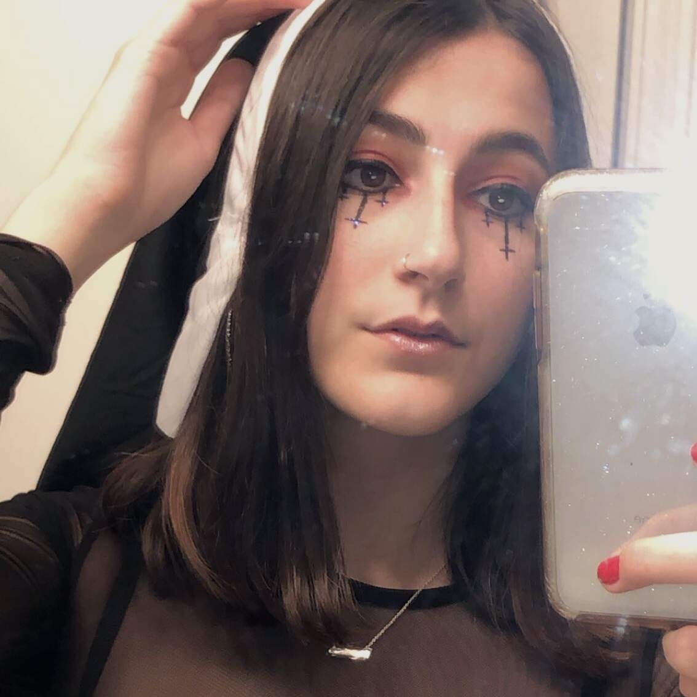

This is Katelyn Brooks' Home Page for Art 101!
Hi my name is Katelyn Brooks and i'm a third year Film and Digital
Media major. I'm apart of the production concentration with a focus
in digital media. Lately, my area of fascination is 2D animation but I've
also enjoyed experimenting with Stop Motion.
Click the rocket ships below to view various animations I've worked
on over the past year.
To the left is a photo of me on Halloween. :)
